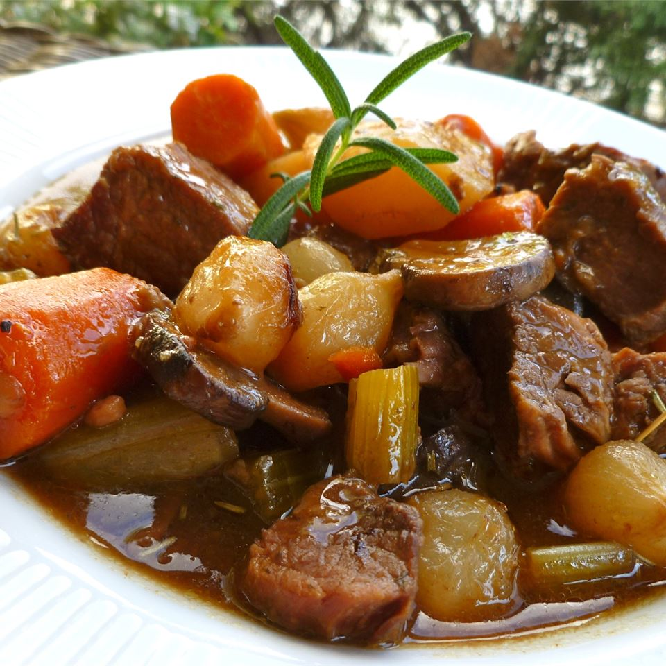

Beef Stew VI

Discription
Thick beef stew good eaten from a bowl or poured over biscuits.Substitute lamb and voila!...Irish stew!!
If thicker stew is
Ingredients
- 2 pounds cubed beef stew meat
- 3 tablespoons vegetable oil
- 4 cubes beef bouillon, crumbled
- 4 cups water
- 1 teaspoon dried rosemary
- 1 teaspoon dried parsley
- ½ teaspoon ground black pepper
- 3 large potatoes, peeled and cubed
- 4 carrots, cut into 1 inch pieces
- 4 stalks celery, cut into 1 inch pieces
- 1 large onion, chopped
- 2 teaspoons cornstarch
- 2 teaspoons cold water
Steps
-
In a large pot or dutch oven, cook beef in oil over medium heat until brown. Dissolve
bouillon in water and pour into pot. Stir in rosemary, parsley and pepper. Bring to a
boil, then reduce heat, cover and simmer 1 hour.
-
Stir potatoes, carrots, celery, and onion into the pot. Dissolve cornstarch in 2
teaspoons cold water and stir into stew. Cover and simmer 1 hour more.